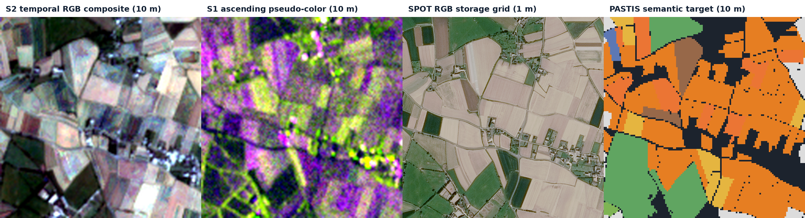

Abstract
Crop mapping from Earth-observation time series has two competing demands: temporally rich but spatially coarse inputs, and parcel-scale outputs whose apparent precision must not exceed their evidence. I describe a compact 1.95M-parameter architecture that encodes Sentinel-2 and dual-orbit Sentinel-1 sequences, fuses valid modalities spatially, and jointly predicts 10 m crop semantics, boundaries and tile-level crop presence. A constrained decoder also produces RGB, semantic and boundary layers on a 1 m storage grid. These layers are explicitly model-derived: only 10 m semantic labels are available, and the optical reference has approximately 1.5 m ground sampling distance. On one seed and one exposed PASTIS fold, the finalized internal benchmark reaches 0.4879 macro IoU and 0.8298 boundary F1 at a one-pixel tolerance. The experiment is neither a geographically held-out evaluation nor evidence of state-of-the-art performance.
1. The resolution-evidence gap
Agricultural parcels are temporal objects. Their spectral signatures evolve through sowing, growth and harvest, while clouds can obscure any single optical acquisition. Sentinel-2 provides the multispectral signal, and Sentinel-1 contributes cloud-independent radar observations. Both are informative, but the labels and core imagery in this experiment live on a 10 m grid.
The central design question is therefore not simply how to upsample. It is how to preserve a scientifically defensible relationship between direct observations and high-grid products. The system separates two claims:
- Direct evidence: 19-class semantics, parcel boundaries and crop presence supervised on the 10 m PASTIS grid.
- Model-derived detail: RGB and logits represented on a 1 m storage grid, constrained to remain consistent with their 10 m anchors.
It describes the array scale from 10 m pixels to a 1 m storage grid. It does not imply native 1 m Sentinel information, independently labeled 1 m crop classes or tenfold physical resolution.

2. Data and supervision
The experiment uses 2,433 complete records from AgriSR-PASTIS, built from PASTIS, PASTIS-R and PASTIS-HD assets. Records are partitioned by the standard five-fold metadata. Folds 1–3 train the model, fold 4 selects checkpoints, and fold 5 forms the internal benchmark.
| Source | Raw shape | Role |
|---|---|---|
| Sentinel-2 | [T, 10, 128, 128] | Required temporal input; 16 dates sampled |
| Sentinel-1 ascending | [T, 3, 128, 128] | Optional radar input; VV/VH retained, 4 dates sampled |
| Sentinel-1 descending | [T, 3, 128, 128] | Optional radar input; VV/VH retained, 4 dates sampled |
| SPOT RGB | [3, 1280, 1280] | Training/evaluation target; never an inference input |
| PASTIS semantics | [128, 128] | 19 predicted classes at 10 m; void ignored |
| Parcel instances | [128, 128] | Boundary derivation and optional feature pooling |
Validity masks reject malformed or absent observations, but they are not cloud masks. The dataset does not provide cloud probability, shadow, snow or saturation layers. This distinction matters when interpreting apparent optical robustness.
3. Architecture
Each modality begins with a convolutional spectral stem. A two-layer, four-head Transformer then attends over acquisition dates independently at every spatial position. Day-of-year is represented with annual and semiannual sine/cosine features. The two Sentinel-1 orbits share encoder weights but receive distinct learned orbit embeddings.
A validity-aware softmax gate combines Sentinel-2, ascending Sentinel-1 and descending Sentinel-1 features. The fused representation enters a 10/20/40 m feature pyramid, followed by three direct heads:
- 19-channel semantic logits at 10 m;
- one-channel parcel-boundary logits at 10 m;
- 18 tile-level crop-presence logits.

model.forward.Block-consistent detail
The high-grid decoder predicts a residual detail field rather than an unconstrained image. For each non-overlapping 10×10 output block, the residual is projected to zero mean:
Yhigh = U(Y10m) + D0
Here P averages each 10×10 block and U repeats it. Before overlap-weighted mosaicking, averaging a high-grid block recovers its 10 m anchor exactly. The constraint applies to semantic, boundary and RGB outputs. It prevents detail from silently changing the coarse prediction, but it does not prove that the inferred within-block structure is correct.
Multi-task objective
The training objective combines semantic cross-entropy and Dice, boundary BCE and Dice, crop-presence BCE, Sentinel-2 degradation consistency, standardized multiscale SPOT reconstruction, SPOT gradients, SPOT boundary guidance and semantic-boundary consistency. High-grid semantics have no independent high-resolution semantic target.
4. Experimental protocol
| Train / validation / benchmark | 1,455 / 482 / 496 patches |
|---|---|
| Seed | 42 |
| Training crop | 32×32 at 10 m; 320×320 high grid |
| Optimizer | AdamW, learning rate 3×10−4, weight decay 0.01 |
| Budget | 50 epochs, batch size 1, FP16 automatic mixed precision |
| Selection | Best fold-4 macro IoU |
| Inference | 32×32 tiles with 8-pixel overlap; logits blended before argmax |
The run uses one seed and one fold assignment. Fold 5 has been inspected multiple times and is consequently described as an internal benchmark, not an untouched test set. All four source Sentinel tiles occur in every split, so this protocol does not measure unseen-region generalization.
5. Results
The selected checkpoint reached 0.5112 validation macro IoU at epoch 49. The final epoch fell to 0.4915, making the trajectory right-censored rather than demonstrably converged.
| Fold-5 internal metric | Measured value |
|---|---|
| Overall pixel accuracy | 0.7997 |
| Macro IoU, including background | 0.4879 |
| Foreground macro IoU | 0.4743 |
| Macro F1 | 0.6142 |
| Boundary F1, one 10 m-pixel tolerance | 0.8298 |
| Crop-presence macro / micro F1 | 0.2455 / 0.4607 |
| Pixel top-label ECE | 0.0733 |
| SPOT diagnostic PSNR / SSIM | 11.38 dB / 0.3097 |
Class performance is uneven. Soft winter wheat, corn, winter rapeseed, beet and soybeans each exceed 0.75 IoU; sorghum reaches only 0.018, mixed cereal 0.105 and winter triticale 0.129. The low crop-presence macro F1 and rare-class IoUs are more informative than overall accuracy for operational risk.
The SPOT metrics are diagnostics, not same-date super-resolution scores. Sensor response, atmosphere, illumination, acquisition date and registration all differ. They must not be interpreted as proof of calibrated 1 m optical reconstruction.
6. Limitations and broader impact
- No repeated trials: one seed, one fold and no confidence intervals prevent variance-aware comparison.
- No geographic holdout: held-out patches share source tiles with training data.
- No causal ablation: the experiment does not isolate the value of Sentinel-1, SPOT guidance or individual losses.
- No high-resolution semantic truth: metre-grid semantic and boundary quality cannot be assigned a true metre-scale IoU.
- Retrospective by default: the full-season sequence may include observations later than a displayed acquisition date.
- Regional taxonomy: PASTIS represents metropolitan France and the French RPG taxonomy; global transfer is untested.
Rare-crop errors can create unequal downstream outcomes. Predictions should not be treated as legal parcel boundaries or used without human and agronomic review for subsidy, insurance, credit or compliance decisions. Every high-grid export should retain provenance identifying it as model-derived.
7. Reproducibility statement
The architecture, data contract, training configuration, evaluator definitions, per-class table and report hashes are versioned in the access-controlled project repository. The v2.1.0 software release recorded 64 passing tests and 81.42% line coverage.
The exact finalized checkpoint bytes and original experiment artifact are currently unavailable; only their recorded hashes and benchmark reports remain. The reported fold-5 values therefore cannot presently be rerun from the exact weights. This is a material limitation, not a documentation detail.
The model is a new compact temporal-Transformer/FPN implementation. Although the broader NeuralQ project retains attribution and conceptual lineage from MAESTRO, this version does not load the MAESTRO masked-autoencoder encoder and should not be described as a MAESTRO fine-tune.
References
- Labatie, A., Vaccaro, M., Lardiere, N., Garioud, A. and Gonthier, N. “MAESTRO: Masked AutoEncoders for Multimodal, Multitemporal, and Multispectral Earth Observation Data.” arXiv:2508.10894, 2025.
- Sainte Fare Garnot, V. and Landrieu, L. “Panoptic Segmentation of Satellite Image Time Series with Convolutional Temporal Attention Networks.” ICCV, 2021.
- Sainte Fare Garnot, V., Landrieu, L. and Chehata, N. “Multi-modal temporal attention models for crop mapping from satellite image time series.” ISPRS Journal of Photogrammetry and Remote Sensing, 2022.
- Astruc, G., Gonthier, N., Mallet, C. and Landrieu, L. “OmniSat: Self-Supervised Modality Fusion for Earth Observation.” ECCV, 2024.
Data attribution. Contains modified Copernicus Sentinel data processed by THEIA/CNES, French RPG parcel annotations from IGN, and SPOT open data distributed by Dataterra Dinamis. Dataset assets retain their respective terms and Licence Ouverte/Open License 2.0 attribution requirements.